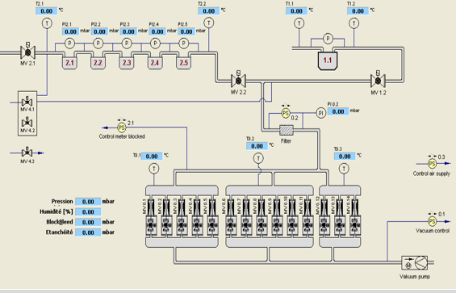

Les compteurs à gaz à membranes sont basés sur le principe du comptage à soufflets,
les chambres mesureuses séparées par une membrane mobile se remplissent et se vident
alternativement. Les membranes communiquent un mouvement alternatif à un système de
distribution par manivelles et tiroirs, qui le transforme en mouvement rotatif transmis
au dispositif totalisateur situé dans le cadran.L’utilisation de ce type de compteur est
très fréquente car il répond aux besoins exigés par les marchés internationaux en termes
de précision et de stabilité à long terme
La stabilité de mesure à long terme du compteur à membrane en fait une solution de choix pour des applications domestiques de gaz. Les compteurs à membranes sont caractérisés par une importante durée de validité après étalonnage. Entretemps, ces compteurs peuvent montrer des anomalies au cours de leurs fonctionnement qui nécessite le besoin de faire un étalonnage selon les conditions d’utilisation. L’étalonnage doit se faire dans une salle bien climatisée, où la température reste stable ainsi que la pression et l’humidité pendant les opérations de test.
